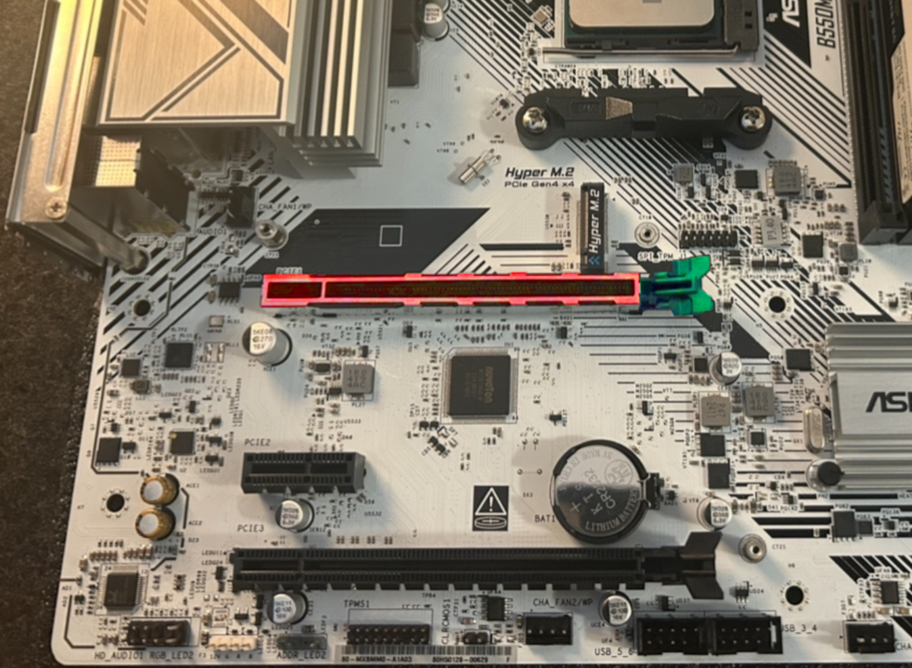

This guide will go over the physical installation of the RTX 5070, as well as
software/drivers you’ll need to install.
If you ever installed a GPU, installing the RTX 5070 is essentially the same process, except for one small part: The new 12V-2x6 power connector,
which will be discussed in more detail later. If you’ve used a different GPU on your PC, it is a good idea to download the drivers of your new GPU
and then uninstall your old GPU’s drivers via DDU (Especially if moving from an AMD or Intel GPU).
Before we start this process, it is important to make sure that the PC is disconnected from power and any remaining power has been flushed out of
the system. When you open the box of your new RTX 5070, you should see a manual, a 12V-2x6 power adapter, and then your GPU (of course). We can set
the power adapter aside for now and worry about the GPU. The GPU needs to go into the slot highlighted in red below. Before we do this, however, the
clip, highlighted in green, needs to be pushed down fully. We also need to remove the necessary expansion slot covers attached to the PC case. This
should be to the right of the PCIE slot in red and can be removed with a screwdriver (make sure to keep the screw, we will need it later). We can
now place the GPU into the slot. Insert the yellow PCIE adapter into the red slot. Once you hear a “click” from the clip, your GPU should be
properly installed onto the motherboard, however, may be slagged downwards from the weight of itself. We can solve this by screwing the GPU onto
the expansion slot we removed earlier.

The 5070 is now fully installed, however we need something to power it. New 50 series cards should come with a 12V-2x6 power adapter that allows
you to power your GPU with any standard PSU. Some modern day PSUs (like the ones we recommended above) come with a 12V-2x6 power cable that can be
used as well. If you have an adapter, connect the end of it to your PSU’s 8 pin connector, then connect the other end to the GPU. Make sure your
power supply is turned on, then power on your PC with your new RTX 5070!
Now that you have turned on your PC, if you haven’t already downloaded drivers for the 5070, go ahead and get them from NVIDIA’s website.
NVIDIA’s app will also be useful for enabling certain features like DLSS 4.5 and RTX HDR. Once your drivers are installed, test your GPU out on
a game or benchmark like 3DMark Demo. If everything works fine, then feel free to dive into your favorite games and test the performance of your
new 5070!
DLSS is a set of technologies developed by NVIDIA that allow for increased FPS, lower latency, and better image quality. Every Nvidia RTX GPU supports the most recent updates to DLSS, however, older cards may not have the hardware to efficiently run some of the newest technologies Nvidia has to offer. Since the 5070 is part of the latest series of Nvidia GPU, it has the technology necessary to support the DLSS 4.5, the most recent update to DLSS by Nvidia. While it will also fully support DLSS 5 in the future, this guide will go into detail about the technology that is currently available to us and how to use it for the best experience.
Upscaling Multi-Frame Generation Ray / Path Tracing